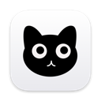
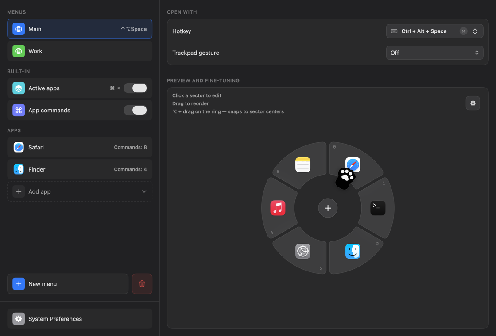
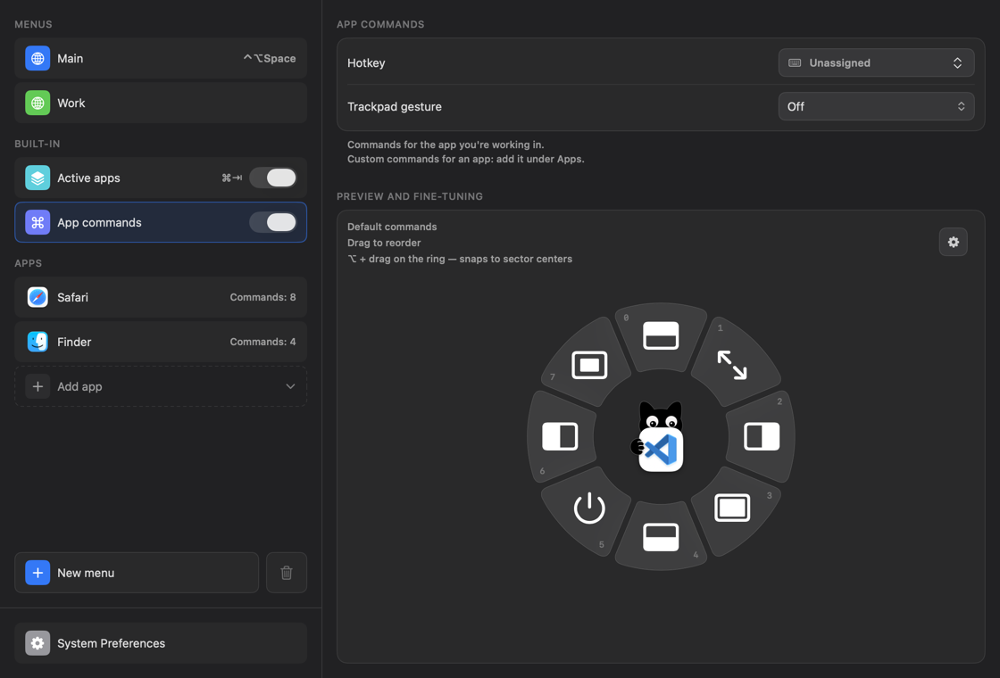

About CatGrab

CatGrab
A radial launcher for macOS.
Hold a hotkey, or tap the trackpad with three fingers, and a ring opens around the pointer with the things you use most. Flick toward one, let go. That is the whole trick.
Apps, links, key combinations, macOS actions, text snippets, window commands. Six kinds of thing, one gesture. There is a cat in the middle. Its eyes follow the pointer.
- FREE
- OPEN SOURCE · MIT
- macOS 13+
- NO TELEMETRY
- ≈ 3.7 MB
Version 1.2.1, 2026-09-22. macOS 13 Ventura or newer, Apple silicon and Intel.
Ring — pretend mode
Move the pointer around the ring: the sector in that direction lights up and says what it will do, exactly like the real thing. Click to fire. Keyboard: arrows, 1–6, Return. The cat watches the pointer in the app too.
Three moves
Hold
Press the menu’s hotkey. Any combination works, even a bare Fn. Or tap the trackpad lightly with three, four or five fingers.
Flick
Move the pointer toward a sector. Its name and what it will do appear right there. Near a screen edge the ring stays on screen and pulls the pointer to its center, so the same flick works everywhere.
Release
Let go. The app launches, the link opens, the keys are sent, the text lands on the clipboard. Or press the digit shown on the sector, or Return.
What it does
| Thing | Details |
|---|---|
| Opens with | A hotkey per menu, including a bare Fn/🌐 press, or a light tap of three, four or five fingers on the trackpad. |
| Six kinds of action | Launch an app. Open a link. Send a keystroke to the app in front. Run a macOS action: Mission Control, App Exposé, Quick Note, Screen Saver, Display Sleep, Lock Screen. Put a snippet on the clipboard, ready for ⌘V. Run a command from the front app’s menu bar. |
| Active apps | A built-in ring of everything that is running: a radial ⌘Tab that also switches to the app’s Space and restores minimized windows. Show the six most recent, or all of them. |
| App commands | One hotkey opens the commands of the app you are in: move the window to a half, fill, center, full screen, quit. Give any app its own set from its menu bar. The same hotkey shows Figma’s commands in Figma and Xcode’s in Xcode. |
| Always readable | The sector under the pointer shows its name and what will happen: the site, the key combination, the first words of the snippet. No guessing from icons. |
| Quick select | Digits and letters on the sectors, arrow keys, Tab, Return. Right-click or Esc cancels. |
| Icons | SF Symbols, emoji, website favicons, your own image, or plain text. |
| Looks | 24 cat-named palettes to start from (Toe Beans, Catnip, Fat Cat…), gradients, glass, a colour for any single sector, size, rotation, and the cat in the middle. Settings come in light or dark. |
| Languages | 13: English, Russian, Chinese, Hindi, Spanish, Arabic, French, Bengali, Portuguese, Urdu, Indonesian, German, Japanese. |
| Backup | Your whole setup is one JSON file. Export it, restore it, keep it with your dotfiles. |
Screenshots
{kind=link}

{kind=link}

Download & install
- Download CatGrab.dmg.
- Open it and drag CatGrab into Applications.
- Open CatGrab from Applications.
First launch
CatGrab is not notarized by Apple. That needs a paid developer account, and this is a free app made by one person. So macOS asks you to confirm, once:
- macOS 15 and newer: macOS says it could not verify CatGrab. Click Done, open System Settings → Privacy & Security, scroll to “CatGrab” was blocked…, click Open Anyway, then Open.
- macOS 13 and 14: in Applications, Control-click CatGrab, choose Open, then Open again.
- Terminal people: one command removes the download mark from CatGrab only.
xattr -dr com.apple.quarantine /Applications/CatGrab.appPermissions
A short tour then asks for two permissions. Accessibility sends keystrokes, runs window and system commands and reads the menus of the app in front. Input Monitoring catches global hotkeys, including ⌘Tab and a bare Fn. Settings live under the cat in the menu bar.
Updating
Download the new DMG, quit CatGrab, drag the new app over the old one. Menus and settings stay put.
Build it yourself
Xcode 26 or its Command Line Tools, then:
git clone https://github.com/berbekk/CatGrab.git
cd CatGrab
make installNews
- 1.2.1 — Active apps: sectors stay in place on a quick repeated ⌘Tab, and the ring is centered for any number of apps. The app you came from always points straight up.
- 1.2.0 — A welcome tour on first launch, with the real ring to play with. “Apps in the ring” limits Active apps to the most recent ones. A new Main menu starts on ⇧1.
- 1.1.0 — The name under the pointer in every menu. Keyboard in an open menu. Duplicate menus and sectors. The ring stays fully on screen near edges. Links typed without
https://open now. - 1.0.0 — First public release.
Yes, four releases in one day. It was a long day. The full story is in the changelog.
Privacy
Everything stays on your Mac, in ~/Library/Application Support/CatGrab/config.json. No account, no telemetry, no analytics, no update pings. The app ships a privacy manifest that says so.
The one network request: when you pick a website favicon as an icon, CatGrab fetches it from the site, or from Google’s or DuckDuckGo’s favicon service, and caches it. That request contains the domain you typed. Nothing else leaves your machine.
This page has no trackers either. The visit counter in the sidebar lives in your own browser and counts only you.